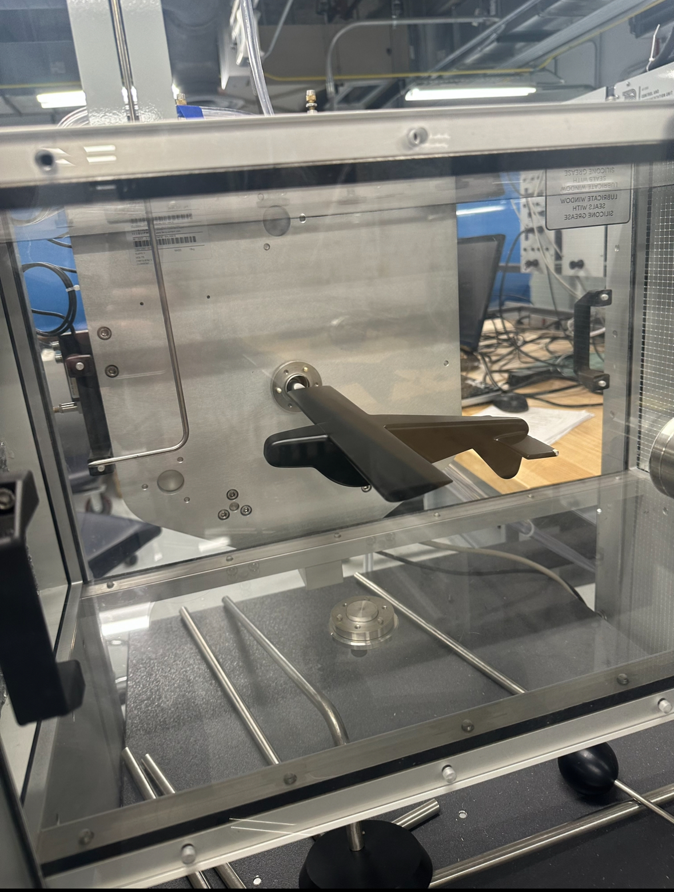
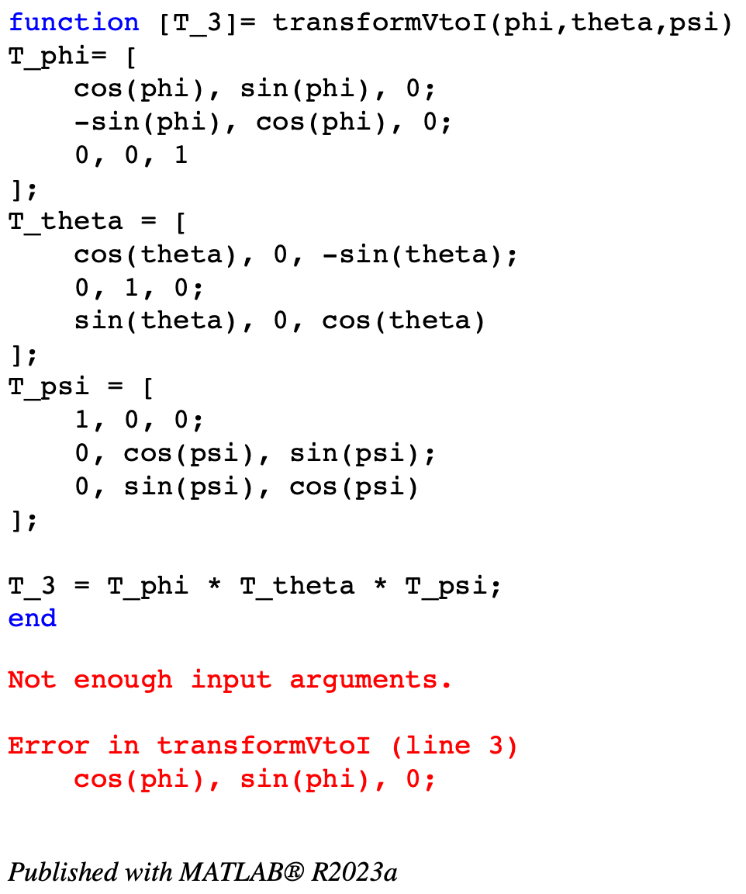

In this role I was a Undergraduate student researcher contributing to the research and development of thermally reactive materials, mostly composites, to be utilized in space deployment scenarios such as satelite deployment.
I was tasked with contributing to the design of a system to recreate the manufacturing process of certain materials with the properties needed to be thermally reactive in order to determine whether this process plays a part why the materials are thermally reactive.
The specifics of what I did was collaborating with fellow student researchers as well as out professor to design the system, after which I created 3D models of system parts which I then turned into engineering drawings to then pass along to machinist to create, after which I began assembling parts of prototype system.
Some of the skills gained from this experience were 3D CAD modeling using Solidworks, GD&T at a basic level, prototype creation, and 2D engineering drawings.
Project Portfolio
Welcome to the Project Portfolio section of my site.
Below you will find the various projects I have participated in, as well as ongoing projects I am partaking in, each divided up based on the field in which it is most relevant, and feel free to use these links below that quickly get you to the relevant fields you are seeking:
A group project during which my team researched and designed a conceptual cryogenic fuel tank with my main task being to create models and conduct heat transfer analysis.
The main focus of our design was to determine whether it was capable of withstanding the loads that we determined and also maintain the temperature necessary for the fuel.
After extensive research into similar systems, materials, and structural designs we tested various design configurations utilizing an FEA excel sheet created by our team in order to verify the tank design.
Once the design was established 3D models were rendered in both Solidworks and Patran (FEA analysis software) which were then used to run FEA analysis and heat transfer analysis on both the tank and the supporting structures.
The results of the preliminary analysis and the later analysis were compared in order to back up our initial results and then collected into various technical reports over the course of the project with our findings then being presented to our class and instructor.
Results from analysis of insulation effects for Cryogenic fuel tank
FEA Analysis of Simple Aircraft Structures and Configurations
Sep - Dec 2023, May - July 2024
Individual project in which I was tasked with conducting Finite Element Analysis (FEA) on various simple aircraft structures eventually leading up to the FEA of a simple fixed wing.
The structures were analyzed for various stresses and shear flow for given loads upon stringers, spar caps, and skin utilizing an FEA Matlab tool chain I developed.
Once a preliminary FEA was conducted utilizing Matlab scripts, FEA software Patran was used to create a 3D model of the Full Fixed Wing with the given loads.
After the model creation, the analysis was conducted utilizing the software, and results were compared to the results from preliminary analysis and collected into multiple technical reports over the course of the project.
Final Patran model for simple wing FEA analysis
Structural Dynamics Analysis
Jan - May 2024
Individual project in which I was tasked with conducting Structural dynamics analysis on various systems utilizing Python-based scripts that were run on Alabama Super Computer Cluster (ASC).
Scripts were created utilizing FEnics, a finite element package, where scripts contained the data related to analysis of the systems such as geometry and meshing, and the static and dynamic analysis of the system.
The scripts were then imported into the ASC, and depending on the depth of the analysis, it would be sometime between runs after which the results were viewed in a visualization software, VisIT.
The various systems were analyzed under different loads, durations, meshing, and even scenario testing, and the results were collected into technical reports to be submitted.
Sample from report for structural dynamics analysis
Conceptual Aircraft Wing Analysis
May - July 2024
Individual project in which I was tasked with designing and analyzing the conceptual wing of a theoretical aircraft created by an AI based on a prompt I provided.
The AI software was used to establish theoretical dimensions and material properties, which would be utilized in the later analysis. The finalized design of the aircraft was determined after discussions with the AI to ensure somewhat realistic parameters based on the initial prompt, and a graphic of the design was created with another AI software.
After this, the FEA analysis was conducted on the wing of the aircraft using a MATLAB toolchain I developed for the initial wing configuration of stringers, skin thicknesses, etc.
Following the preliminary analysis with MATLAB, another analysis was performed in Patran (FEA Software), where a full 3D model of the wing was created and analyzed under various determined loads that the wing would encounter.
The results of both the preliminary and Patran analyses were compared and used to establish margins of safety and areas for improvement. The entire analysis process was documented in multiple technical reports and eventually presented to both the instructor and the class.
Individual project analyzing various aircraft engine types in scenarios simulated in NPSS with developed scripts utilizing NPSS software.
Performed analysis utilizing both hand calculations and developed NPSS scripts to simulate various engine conditions, performance measures, and iterative analysis.
The engines analyzed were ramjets to turbofans to visualize the performance differences in the engine types and results of these analysis were collected and discussed in technical reports for each engine type.
Report from the results of the analysis of a High Bypass Turbofan
Turbofan Trade Study
Nov - Dec 2023
Individual project during which I was tasked with conductomg trade study on the design and optimzation of a turbofan engine to meet certain performances measures.
Utilized developed NPSS scripts to run iterative analysis for varying engine parameters to determine the design needed to meet the asked for criteria.
The trade study was performed for each component to meet each asked criteria and the full analysis and process was documented into a technical report.
Report of the results from Trade Study
Dual-spool Turbofan Engine Performance Analysis
Jun - Jul 2024
Developed scripts to perform Parametric Cycle Analysis and Component efficiency analysis upon a dual spool turbofan engine given set characteristics based on reference performance calculations.
The developed script ran at varying altitudes, throttle settings, and Mach numbers and collected the data of various engine components to determine how they are affected by altitude and Mach number.
The results of the analysis conducted in Matlab were compared to the results of an existing aricraft engine analysis tools to compare as well as discuss trends in performance in a technical report.
Group testing where we conducted wind tunnel and other aerodynamics experiments in order to visualize various aerodynamic concepts and gain better understanding of said concepts and how they affect various airfoil shapes.
The different tests utilized various aerodynamic tools such as wind tunnels, manometers, pressure transducers, and Pitot static tubes to visualize aerodynamic concepts such as jet streams or effects of changes in pressure at varying wind speeds.
These test were conducted as group projects and all data was collected and verified via aerodynamic calculations in order to compare testing results and findings which were collected in technical reports.

Wind Tunnel Testing
6DOF Learjet C-21 Aircraft Simulation
Mar - May 2024
Individual project during which I was tasked with creating and altering a 6DOF simulation for a C-21 Learjet in a Matlab Toolchain and test various flight controls.
I created an atmosphere model and transformation matrix function to implement with other Matlab functions which were partial given and altered to simulate Steady Level Unaccelerated Flight at set flight controls for given aircraft data or derived aerodynamic properties
The main focus of the simulation was to run with varying flight controls in order to visualize the effects of flight controls dampening the fluctuations of the aircraft in flight, such as in altitude and pitch angle.

Sample Matlab script for Transformation function
This portfolio website was created to give possible employers some of my other relevant experiences to expand upon my limited resumes in order to show the versitility of my skills and ability to learn new ones.
This project has given me the opportunity to learn html and css coding languages, the basics of web development, and begin exploring some java script as well.
This website will more than likely continue to be an onging project with me adding my own personal projects on here as I please in order to display my experience in greater detail than just a one page resume.
Group Senior Design Project: We designed a conceptual lunar prospecting rover capable of exploring and surviving at the lunar south pole for a year-long mission, based on the NASA RASCAL 2024 competition prompt.
Subsystem Collaboration: The group was divided into two subsystems, and I participated in the design and co-leadership of the rover's power generation system, focusing specifically on the mechanical aspects.
Oversight of Mechanical System: I oversaw the research and design of the mechanical system, which included dimensions, materials, deployment methods, movement, solar panel articulation, 3D modeling/testing, and prototype design and construction. Additionally, I ensured that deadlines were met and team members were keyed into the needs of the mission and staying tuned into the progress of other groups within the team to ensure compatibility while brainstorming ideas for our design.
Project Structure and Feedback: The project was structured to allow us to research and design our system at our own pace, while continuously improving our design based on feedback from experienced aerospace engineers with relevant knowledge in space missions based on our technical reports and presentations.
Final Deliverables: By the end of the project, we submitted various technical reports and delivered a Senior Design Capstone Presentation. Our design had progressed to the analysis of structural designs and the creation of a prototype for one of the main components: the solar tracking system. We also began exploring the manufacturing processes and cost implications of the system.
Description of Rover systemsTesting our protoype solar tacking system